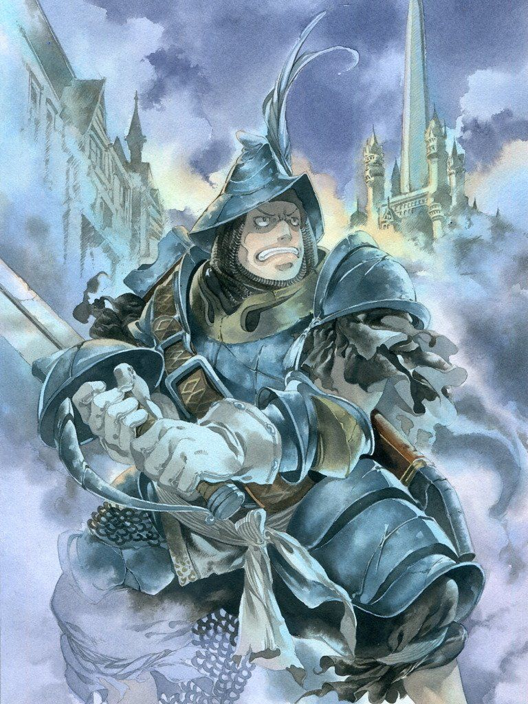

Personajes principales
-
Yitán Trival

El protagonista principal. Un Ladrón miembro del Grupo de Teatro Tantalus, y un mujeriego innato.
-
Garnet von Alexandros XVII

La protagonista principal femenina y princesa del trono de Alexandria. Una invocadora con más aptitudes para los Espíritus de Invocación que para la magia blanca.
-
Adalbert Steiner
Un noble y devoto Caballero de Alexandria, es el capitán del Batallón Pluto. Su lealtad esta al nivel de su estupidez
-
Vivi Ornitier

Un joven mago negro de corazón cálido y puro.
-
Quina Quen

Una Qu con habilidades de Mago Azul quien se une a la aventura para experimentar la gastronomía de las distintas regiones del mundo.
-
Freija Crescent

Una guerrera draconiana burmeciana que busca incansablemente a su amor perdido.
-
Eiko Carol
Una jovencita invocadora con excelentes aptitudes para la magia blanca, una de las pocas originarias sobrevivientes de su desaparecida tribu.
-
Amarant Coral

Un Monje y bandido altamente buscado, quien según él, tiene una rencilla pendiente con Yitán.